Level of detail
Game engines draw distant trees with simpler meshes. ArborStudio builds four mesh levels, LOD0 to LOD3, and a billboard (LOD4) from the same tree, and exports them named so that Unity, Unreal and Godot can group them.
Viewing a level
Click 0, 1, 2, 3 or BB next to LOD in the toolbar, or use the Level of detail section at the end of the Properties panel. The viewport header shows the level on display and its triangle count. Switch to Wireframe to see how the mesh is reduced.
How the levels are built
All mesh levels share one skeleton: every branch starts at the same place, follows the same path and ends at the same point. Only the mesh around the skeleton becomes coarser, so the silhouette of the tree stays the same and an engine can switch between levels without a visible jump.
| Level | Sides around stems | Points along stems | Leaves kept |
|---|---|---|---|
| LOD0 | 100% | 100% | 100% |
| LOD1 | 65% | 70% | 60% |
| LOD2 | 45% | 50% | 35% |
| LOD3 | 25% | 30% | 15% |
- Points along stems are removed where they change the stem's path and thickness least, so bends and kinks are kept.
- A stem with fewer sides is a polygon with a smaller average width than a round stem. ArborStudio widens the radius to compensate, so branches do not look thinner at lower levels. Trunks keep at least five sides.
- Leaves are thinned out evenly over the crown, and the remaining leaves grow larger, so the crown keeps the same leaf area and density from a distance.
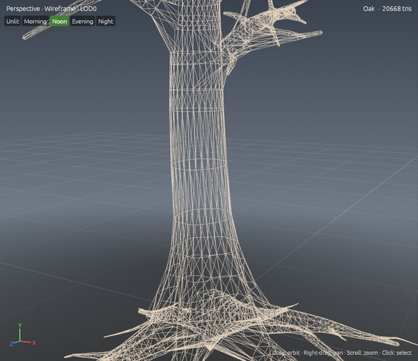
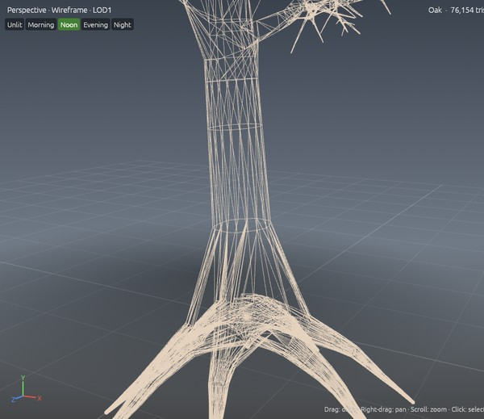
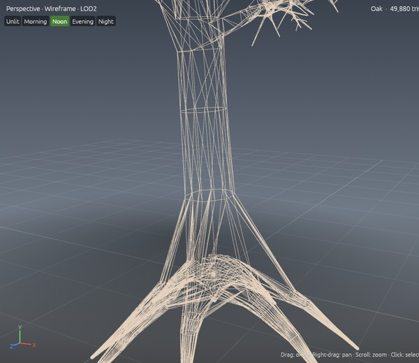
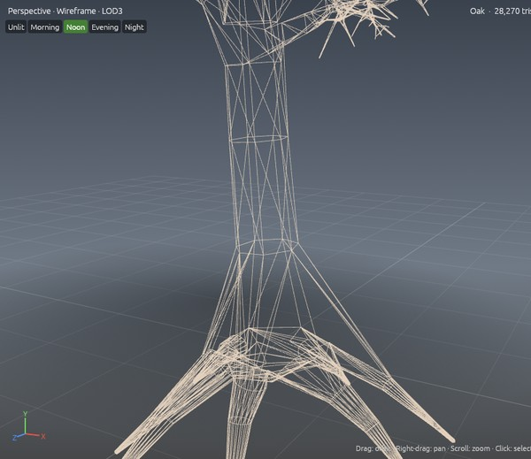
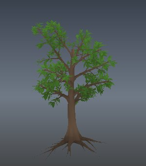
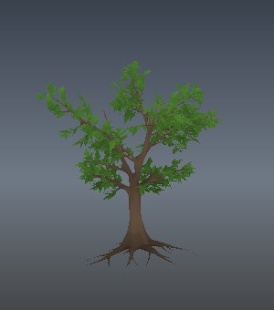
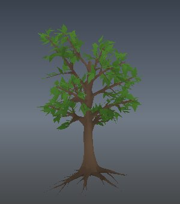
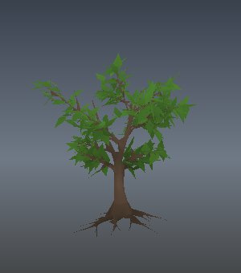
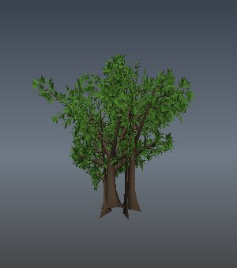
The detail of LOD0 is set by each generator's Sides and Segments and by the leaf counts. Lower levels follow from these values, so a tree with more detail at LOD0 also has more detail at the lower levels.
Triangle budgets
A triangle budget is the most triangles a level may have. Set one when the levels have to fit a performance target, for example 40,000 triangles for the closest level of a tree that appears many times in a scene. The budgets are in the Level of detail section of the tree settings and are saved with the project.
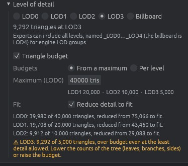
- Triangle budget
- Turns the budgets on. The billboard is always 16 triangles and has no budget.
- From a maximum
- You enter one number, the budget of LOD0. Each next level gets half of the one before: with a maximum of 40,000, LOD1 gets 20,000, LOD2 10,000 and LOD3 5,000. The derived values are shown below the field.
- Per level
- You enter a budget for each of LOD0 to LOD3. 0 means no limit for that level.
- Reduce detail to fit
- On: a level over its budget gets fewer sides around its stems, fewer rings along them and fewer, larger leaves, until it fits. ArborStudio keeps as much detail as the budget allows. Off: every level keeps its usual detail, and the levels over budget are only reported.
Below the settings, each level is listed with its triangles and its budget, and with the number it had before it was reduced. The check runs in the background, so the list may take a moment to update after a change.
Warnings
A level that is over its budget is marked with ⚠ in amber, in the list and at the top right of the viewport while that level is shown:
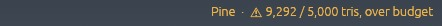
With Reduce detail to fit on, a level can still be over budget: reducing keeps every branch and leaves at least a few sides on each stem, so a tree with many branches has a lower limit. Lower the counts of the generators (branches, twigs, leaves) or their Sides, or raise the budget. When you export a level that is over budget, the status bar and the agent activity say so.
Billboard
The billboard is the tree rendered from eight sides into one image, an atlas of 4 × 2 pictures. In the export it is shown on four crossed cards with both faces, a few triangles in total. Use it for the farthest distance and for large forests.
The atlas is saved as a PNG file with a transparent background next to the export, named <file>_billboard.png.
Exporting levels
Turn on Include LOD0–3 in exports and Include billboard LOD in exports in the File menu or the toolbar's Export menu. The meshes are then named:
| Mesh | Content |
|---|---|
<Tree>_LOD0 to <Tree>_LOD3 | The mesh levels |
<Tree>_LOD4 | The billboard, when the mesh levels are included |
<Tree>_Billboard | The billboard, when it is the only extra level |
The _LOD0 to _LOD4 suffixes follow the naming convention that Unity and Unreal use for LOD groups. Depending on the engine version, the importer and the file format, the engine builds the group on import or you assign the levels yourself in its LOD settings. In Godot, switch between the levels by distance with visibility ranges. See Exporting.
Levels for agents
get_stats with all_lods: true returns the triangle and vertex counts of every level. set_view with lod shows a level in the viewport, and render_preview with lod renders it.
set_triangle_budget sets the budgets: max derives all four from one maximum, levels sets each one, and fit switches the reduction on or off. check_triangle_budget returns every level with its budget, its triangles, its triangles before reduction and whether it is over budget, plus within_budget for the whole tree. export_tree and export_variations add within_budget and a warning when a level went out over budget.
set_triangle_budget {"max": 40000}
check_triangle_budget {}
→ within_budget: false
LOD3: 9,292 of 5,000 triangles, over budget even at the least detail allowed.